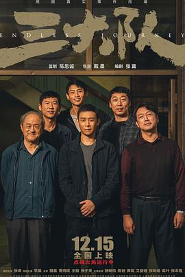

三大队
又名：请转告局长，三大队任务完成了 / Endless Journey
张译依旧演技封神。影片以追凶为主线，通过程队当线索，却忘了人民警察的作用，虽然在台词中提出一些他们的作用，但是效果式微。另外女儿也就是家人这部分也稍显薄弱，没有很大的情感投入。影像合格，部分分镜能看出导演想通过镜头语言讲故事的感觉，只是有点欠缺火候，在墓地的那一段演说时演员对长镜头的把控还是不成熟。不得不说的是，最后的梦境长镜头还是有点意思的，让人感叹正义的人们与罪恶的人们一个不得安生整天思想紧张一个家庭美满和睦幸福，让人不住唏嘘。
作品信息
| 导演 | 戴墨 |
| 编剧 | 张冀 |
| 主演 | 张译 / 李晨 / 魏晨 / 曹炳琨 / 王骁 / 张子贤 / 杨新鸣 / 陈创 / 黄璐 / 艾丽娅 / 张新成 / 高叶 / 张本煜 / 王雨甜 / 王双宝 / 张祎曈 / 冯兵 / 董向荣 / 李妍锡 / 徐冬冬 / 马千壹 / 陈昊 / 张磊 / 宁晓志 / 刘頔 / 郜玄铭 / 黄婷 / 盛梓航 / 韩静 / 赖维佳 |
| 类型 | 剧情 / 犯罪 |
| 制片国家/地区 | 中国大陆 |
| 语言 | 汉语普通话 |
| 上映日期 | 2023-12-15(中国大陆) / 2023-11-03(金鸡国产新片展) |
| 片长 | 132分钟 |
| IMDb | tt28212677 |
说过什么
2024-02-16 00:40:10
广播 · 看过 · ★★★★☆
张译依旧演技封神。影片以追凶为主线，通过程队当线索，却忘了人民警察的作用，虽然在台词中提出一些他们的作用，但是效果式微。另外女儿也就是家人这部分也稍显薄弱，没有很大的情感投入。影像合格，部分分镜能看出导演想通过镜头语言讲故事的感觉，只是有点欠缺火候，在墓地的那一段演说时演员对长镜头的把控还是不成熟。不得不说的是，最后的梦境长镜头还是有点意思的，让人感叹正义的人们与罪恶的人们一个不得安生整天思想紧张一个家庭美满和睦幸福，让人不住唏嘘。
最后一次看到是 2026-10-07T23:13:48+08:00 · 豆瓣原页